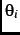
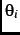
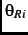
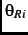
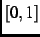

Alesina and Rosenthal's (1995, Chapter 4; 1996) model uses a stylized perturbation of voters' policy preferences to generate uncertainty about the presidential election outcome. The perturbation they define shifts voters' ideal points relative to both parties' positions, but the perturbation is unbiased and therefore does not systematically increase either the absolute distance between voters and the party that won the presidency or the net distance compared to the other party. Moreover, the difference between the midterm and presidential-year legislative cutpoints that occurs in their model does not depend on those distances.footnote The changes from presidential year to midterm in ideal points and in party positions that underlie Figure 1, and the degree to which such changes contribute to midterm losses by the president's party, are therefore not encompassed by this aspect of Alesina and Rosenthal's theory.
To assess the components of change it is important to consider not merely the
magnitudes but also the directions in which the aggregate of voters moves with
respect to the parties. Consider a situation in which all voters think the
Democratic party policy position is left of the Republican party position,
i.e.,
for all voters  . We may characterize the
aggregate movement across elections in terms of two median statistics: the
median difference between ideal points and Democratic positions, denoted
, and the median difference between ideal points
and Republican positions, denoted
. Let
denote the difference between the median policy difference with respect to the
Democratic party at midterm and the median difference in the preceding
presidential year. If
, then at midterm voters have ideal points
more to the left of the positions they attribute to the Democratic party than
in the preceding presidential year. Other things equal,
implies
that there is a greater proportion of votes for Democratic candidates at
midterm than in the preceding presidential year. On the other hand if
, then midterm voters have ideal points more to the right of
Democratic party positions and, other things equal, a smaller proportion vote
for Democratic candidates at midterm. Analogously we use
to denote the
difference between midterm and the preceding presidential year of the policy
differences with respect to the Republican party. If
, then
midterm voters have ideal points more to the right of Republican party
positions and, other things equal, Republican candidates receive a greater
proportion of votes at midterm than in the preceding presidential year. If
, then other things equal Republican candidates receive a smaller
proportion of votes at midterm. Because ,
. We may characterize the
aggregate movement across elections in terms of two median statistics: the
median difference between ideal points and Democratic positions, denoted
, and the median difference between ideal points
and Republican positions, denoted
. Let
denote the difference between the median policy difference with respect to the
Democratic party at midterm and the median difference in the preceding
presidential year. If
, then at midterm voters have ideal points
more to the left of the positions they attribute to the Democratic party than
in the preceding presidential year. Other things equal,
implies
that there is a greater proportion of votes for Democratic candidates at
midterm than in the preceding presidential year. On the other hand if
, then midterm voters have ideal points more to the right of
Democratic party positions and, other things equal, a smaller proportion vote
for Democratic candidates at midterm. Analogously we use
to denote the
difference between midterm and the preceding presidential year of the policy
differences with respect to the Republican party. If
, then
midterm voters have ideal points more to the right of Republican party
positions and, other things equal, Republican candidates receive a greater
proportion of votes at midterm than in the preceding presidential year. If
, then other things equal Republican candidates receive a smaller
proportion of votes at midterm. Because ,
 and
 vary independently, all combinations of positive and negative
values for and are possible.
and
 vary independently, all combinations of positive and negative
values for and are possible.
Of particular interest are circumstances in which and are either both positive or both negative. If and , then between elections the distribution of voters' ideal points has moved to the right relative to both parties' positions. Other things equal, Republican House vote share increases. If a Democrat is president, the result is a kind of policy moderation: the Republican party's increased presence in the House means that policy outcomes are expected to be closer to the midterm Republican position.footnote If and , then between elections the distribution of voters' ideal points has moved to the left relative to both parties' positions, Republican House vote share decreases and, if a Republican is president, there is moderation of expected policy toward the midterm Democratic position.
Moderation via such a pattern of changes occurs in five of the six midterm
elections from 1978 through 1998, according to NES data. Using NES data to
compute the median differences between ideal points and the parties'
positions, it is necessary to adjust for the fact that some voters place the
Democratic party policy position to the right of the Republican party
position: for some voters,
. Because moderation
essentially refers to movement from one party toward the other and does not
depend on the orientation with which each voter interprets its ideal point and
the parties' positions, we use the sign of the difference between
and
 to orient all voters the same way. Hence we
compute
and
to orient all voters the same way. Hence we
compute
and
 for each
midterm year and analogous quantities for each presidential year. In
Figure 2 we plot the values for all voters who report at least one
complete set of policy position values (as in Figure 1) and, in
separate panels, for party identifier subsets. The interelection differences
with respect to each party are now:
for each
midterm year and analogous quantities for each presidential year. In
Figure 2 we plot the values for all voters who report at least one
complete set of policy position values (as in Figure 1) and, in
separate panels, for party identifier subsets. The interelection differences
with respect to each party are now:
Figure 2(a) shows that among all voters, in every midterm except 1998 there is moderation based on interelection changes in the location of voters' ideal points relative to the parties' positions. In 1978 and 1994, with Democratic presidents, we have and , and in 1982, 1986 and 1990, with Republican presidents, we have and . In 1998 there is a Democratic president but nonetheless and : Democrats' House vote share was pushed up, because between 1996 and 1998 the distribution of voters' ideal points shifted to the left relative to both parties' positions.footnote The pattern of interelection changes is similar across all of the partisan subsets and within each subset is by and large similar to the pattern among all voters, except for 1988-90. Between 1988 and 1990 we have among all voters but within each partisan subset . The reason for the difference is that a higher proportion of voters identified as Democrats and a lower proportion as Republicans in 1990 than in 1988,footnote and is more negative among Democratic voters than among Republican voters.
The moderating pattern associated with having either a Democratic president, and or a Republican president, and differs from the mechanism of disappearing uncertainty that is the primary focus of Alesina and Rosenthal's analysis, but it is not necessarily inimical to their theory. The fluctuations in policy positions may be related to the idea that parties may commit to policies different from their ideal policies (Alesina and Rosenthal 1995, 127-136). The consequences of such an extension for Alesina and Rosenthal's formal analysis are complicated, but an important result they report is that under a wide range of circumstances parties announce policies that are more polarized than their ideal policies are. Moreover, polarization increases as the president's power () falls. As we mentioned previously (footnote 33), the combination of our estimates with those of Mebane (2000) shows that is usually smaller at midterm than at the time of the presidential election: voters usually believe the president will be more powerful before midterm than after. Alesina and Rosenthal (1995) do not examine models in which changes at midterm, but it is reasonable to speculate that in such models--with as well the parties being allowed to change their positions at midterm--there would be a tendency for polarization to increase at midterm. In that case one should expect the relationships between voter ideal points and the parties' positions to change by larger and more systematically biased amounts than the changes produced by random perturbations.
The NES data from 1976 through 1998 mostly support the idea that polarization is greater at midterm. Among voters, the median absolute difference between the parties' positions is smaller in the presidential election than at midterm in five of the six pairs of elections (the exception is 1988-90).footnote The interelection changes in the median absolute differences are, however, small compared to the observed magnitudes of and . These results are only suggestive, because by construction our measures of party positions are within the unit interval  in every year. Moreover, different voters attend to different combinations of substantive issues, and the mix of salient issues changes over years (the changes over the years in the issue scales included in the NES partly reflects the variation in substantive concerns over time). Increased polarization may take the form of greater emphasis being placed on substantive issues about which voters' preferences are more intense.
The changes and may also arise because voters learn something after the presidential election. They may learn more about what a party's true policy position is, or about a policy position's consequences. Or they may learn how competent the elected officials are to implement whatever policy happens to be in effect.footnote Either kind of discovery might be a reason for a voter to update the relationship between the voter's ideal point and the positions the voter attributes to the parties. A party's actions either in the presidency or in Congress might be informative. Perhaps, for instance, the Democrat-favoring changes shown in Figure 2 for 1996 to 1998 stem from judgments that Republicans in the House were especially incompetent or extreme.footnote The unanswered question is why are movements away from the president's party more typical. Why do electors not learn more often that the president's party is more competent or less extreme than they previously thought.
One of the difficulties of explaining why moderation by policy position changes occurs is that our policy position measures are based on the gaps between electors' ideal points and the perceived positions of the two major parties. Across elections, we cannot distinguish between movement in electors' ideal points and movements in the positions of the political parties. Therefore, we cannot say much regarding a large number of possible explanations for policy position moderation. For example, notwithstanding Alesina and Rosenthal's polarization argument, it is possible that once a party is in office it follows policies that are more extreme than the ones it proposed at election time. Electors may learn this and consequently the relative gap between the president's party and electors increases at midterm. Electors' ideal points remain fixed but their perceptions of the parties change. Such a theory would have the problem that it leaves unexplained how electors are repeatedly misled to believe that the party that wins the White House is more moderate than it actually is. In any case, with our data we cannot distinguish such a pattern from one in which electors change their ideal points because, say, they learn more about the consequences different policies have.